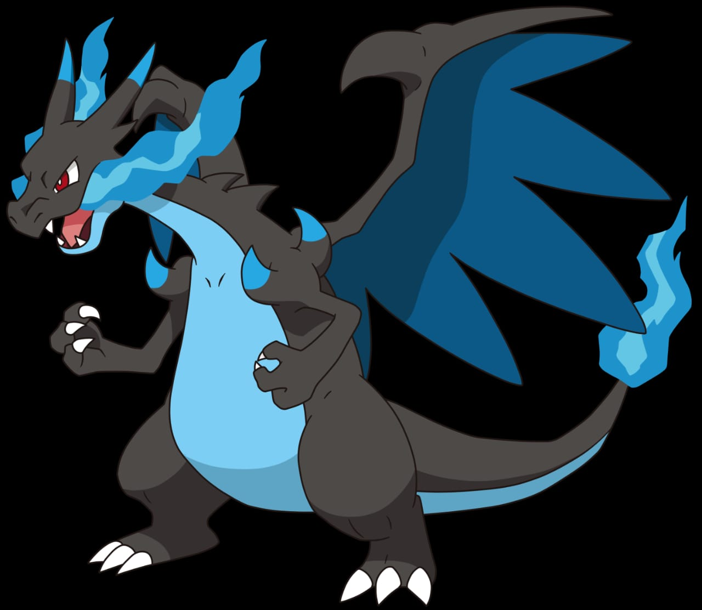

Charizard (/ˈtʃɑːrɪzɑːrd/), known in Japan as Lizardon (リザードン, Rizādon), is a Pokémon in Nintendo and Game Freak's Pokémon franchise. Created by Atsuko Nishida,[1] Charizard first appeared in the video games Pokémon Red and Blue (Pokémon Red and Green in Japan) and subsequent sequels. They have later appeared in various merchandise, spinoff titles and animated and printed adaptations of the franchise. It is known as the Flame Pokémon. Shin-ichiro Miki, the actor who voices James in the original Japanese version of the Pokémon anime, voices Charizard in both the Japanese and English-language versions of the anime. An orange, draconic Pokémon, Charizard is the evolved form of Charmeleon and the final evolution of Charmander. It also has two Mega Evolved forms, Mega Charizard X and Y, that were likely both designed by Tomohiro Kitakaze, the designer of Mega Charizard X,[3] and are not permanent and always revert to the normal Charizard form once a battle is complete. It also has a Gigantamax form in Pokémon Sword and Shield, which changes its appearance and size for 3 turns, until it is knocked out, until it is returned, or until the battle ends.
CHARIZAD X
Charizard is featured in the Pokémon anime series with the most recurring being from the main character Ash Ketchum. It is featured in printed adaptations such as Pokémon Adventures, in the possession of Blue, one of the main characters. Charizard appears in Pokémon Origins with main character Red as its trainer. In this series, Charizard is iconic, because it was the first Pokémon to Mega Evolve into Mega Charizard X and it helped beat Mewtwo. Charizard has received positive reception from the media, with GamesRadar describing it as "hands-down one of the coolest Pokémon out there". Charizard is the version mascot of Pokémon Red and FireRed versions, and makes an appearance on the boxarts of Pokémon Stadium, Pokémon Ranger, Pokémon Mystery Dungeon: Red Rescue Team, Pokémon Mystery Dungeon: Explorers of Sky, and Pokémon Super Mystery Dungeon. It has appeared in every entry of the Super Smash Bros. series, in an unplayable capacity in the first two games before becoming a playable character from Super Smash Bros. Brawl onwards. A Charizard also appears in the live-action animated film Detective Pikachu.